Choque mecânico
A garra quebra quando recebe impacto. Na análise, a falha começa entre as camadas, na raiz da flange do robô.
PAD de sacrifício em TPU 95A para absorver o choque e preenchimento interno otimizado em PA-CF para a garra de ventosas do robô UR30.
RedLab · SENAI. Desafio: garra SAMI do robô UR30 que quebra por choque mecânico.
Integrantes: nome · função (preencher)
A garra quebra quando recebe impacto. Na análise, a falha começa entre as camadas, na raiz da flange do robô.
Substituir a garra exige parada de manutenção de cerca de 45 minutos.
Com a linha parada, caixas deixam de ser produzidas e o custo de oportunidade cresce a cada minuto.
dados da equipe Cada palete tem 40 caixas (4 camadas de 10); cada caixa tem 12 itens. A garra instalada (deck do cliente) pesa 2,834 kg e, com duas caixas de 12 kg, chega a 26,834 kg, ou 89% dos 30 kg do UR30.
Peça de TPU 95A que recebe o choque no lugar da garra. É barata, imprime rápido e é trocada a cada 2 meses (última troca registrada).
1.577 g de peças impressas (estimado)
1.785 g · +13,2% de massa. Mais forte que 30%, porém mais pesada.
1.497 g · −5,0%. Material só onde a falha começa: 100 kg numa asa, contra 76 kg do 40% uniforme.
O preenchimento muda só por dentro: as 5 paredes e o contorno externo continuam iguais. Massas do fatiamento no Orca (K1 Max, 1:1). Resistência por FE da garra montada.
| Tritan (antes) | PA-CF (garra) | TPU 95A (PAD) | |
|---|---|---|---|
| Custo | R$ 250,00 | R$ 258,00/kg | R$ 158,00/kg |
| Prazo de entrega | 15–20 dias (importado) | 7 dias úteis | 5–8 dias úteis |
| Densidade (fatiamento) | 1,18 g/cm³ | 1,10 g/cm³ | 1,22 g/cm³ |
| Módulo de Young | 1.548 MPa | 4.430 MPa | flexível |
| Tração máx. (Fusion) | 58 MPa | 102 MPa | — |
| Temperatura (HDT) | — | 164 °C | — |
| Função | garra | garra estrutural | absorver choque |
custos e prazos: equipe propriedades: entradas do Fusion e do Orca
A fibra de carbono do PA-CF é abrasiva. O próprio Orca avisa em todos os fatiamentos: dureza do bico (HRC) menor que a exigida pelo filamento. Bico de latão comum se desgasta e altera a extrusão.
| Impressora | Creality K1 Max |
| Bico | 0,4 mm, endurecido |
| Camada | 0,2 mm |
| Paredes | 5 perímetros |
| Preenchimento | giroide + zonas R07 |
| Escala | 1:1, sem alterar o exterior |
| Paredes | 3 perímetros |
| Preenchimento | giroide 40% |
| 8 PADs (peças) | 93,1 g |
| Com suportes | 139,0 g |
| Tempo (8 PADs) | 11,0 h |
Orca Por que giroide: espalha a carga em todas as direções e mantém boa resistência com 20–25% de preenchimento.
| Item | Base | Custo |
|---|---|---|
| Garra em PA-CF (R$ 258/kg × filamento do Orca, com suportes) | ||
| R07 com esqueleto | 1.809 g | R$ 466,77 |
| R07 sem esqueleto | 1.745 g | R$ 450,08 |
| TPMS-D 40% (proposta inicial) | 2.097 g | R$ 540,92 |
| PADs em TPU 95A (R$ 158/kg) | ||
| Conta da equipe | 62 g / 8 peças | R$ 1,22/un · R$ 9,76 |
| Fatiamento Orca (só peças) | 93,1 g / 8 | R$ 1,84/un |
| Fatiamento Orca (com suportes) | 139,0 g / 8 | R$ 2,75/un |
| Componentes | ||
| Bico MK8 endurecido | 1 un | R$ 23,50 |
| Garra antiga · Tritan | custo informado | R$ 250,00 |
preços: equipe gramas: Orca A conta da equipe (62 g para 8 PADs) e o fatiamento (93,1 g sem suportes) diferem. Vale pesar um PAD impresso para fechar o número.
| Tritan, por peça (equipe) | 6 a 8,5 h |
| PA-CF superior R07 (Orca) | 38,0 h |
| PA-CF inferior R07, cada (Orca) | 20,5 h |
| 8 PADs TPU 95A (Orca) | 11,0 h |
| 4 PADs (equipe) | 1h40 a 2h |
Como a garra leva mais de 3 dias para imprimir, ela precisa estar pronta antes da quebra: estoque de reposição.
Taxa de chegada de falhas (λ), taxa de reparo (μ) e tempo médio de espera (Wq) para a troca de garra e de PAD. Preencher com os dados de operação.
Melhoria contínua: PAD trocado de forma planejada, sem parada não programada.
Eliminar o desperdício de 45 min de parada e de produto não embalado.
O quê, por quê, onde, quando, quem, como e quanto custa a troca da garra.
Causas da quebra: material (Tritan), método (preenchimento uniforme), máquina (2 caixas numa asa), medida.
Conteúdo a completar pela equipe (contorno tracejado).
Simulações no Autodesk Fusion e cálculo de impacto para a garra de ventosas impressa em 3D: corpo em PA-CF e proteções (PADs) em TPU 95A.
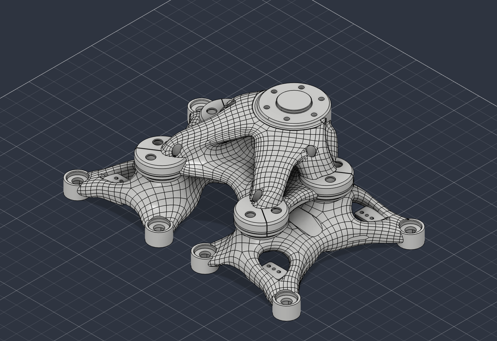
Envelopes STL usados no fatiamento. Arraste para girar, role para aproximar.
Corpo superior · 1.391 cm³
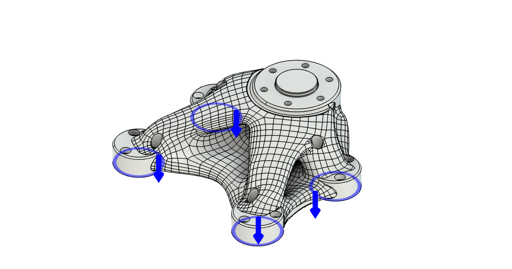
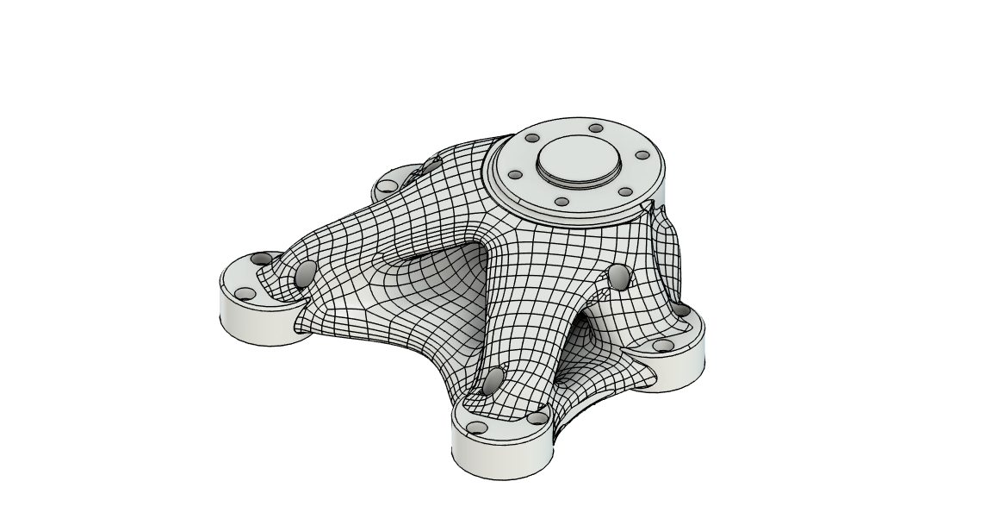
| Tipo de estudo | Tensão estática |
| Peça | Corpo superior |
| Restrição | Fixo (Ux, Uy, Uz) |
| Carga por face | 88,84 N |
| Carga total | 355,4 N |
| Nós | 498.261 |
| Elementos | 339.001 |
| Software | Fusion 2706.1.17 |
Estudo exploratório “24 kg”, mesma geometria e cargas para os dois materiais.
| PA6-CF | Tritan | |
|---|---|---|
| Material (entrada do Fusion) | ||
| Densidade | 1,09 g/cm³ | 1,18 g/cm³ |
| Módulo de Young | 4.430 MPa | 1.548 MPa |
| Poisson | 0,39 | 0,38 |
| Escoamento | não informado | 43 MPa |
| Tração máxima | 102 MPa | 58 MPa |
| Resultado | ||
| Von Mises máx. | não exportado | 3,22 MPa |
| 1ª principal máx. | 5,16 MPa | 5,03 MPa |
| 3ª principal mín. | −4,61 MPa | −4,49 MPa |
| Fator de segurança | > 8 na peça toda | > 8 na peça toda |
mm · menor é melhor
As tensões quase não mudam entre os materiais (mesma geometria e carga). O que muda é a rigidez: o deslocamento cai na proporção do módulo de Young (4.430 ÷ 1.548 ≈ 2,9).
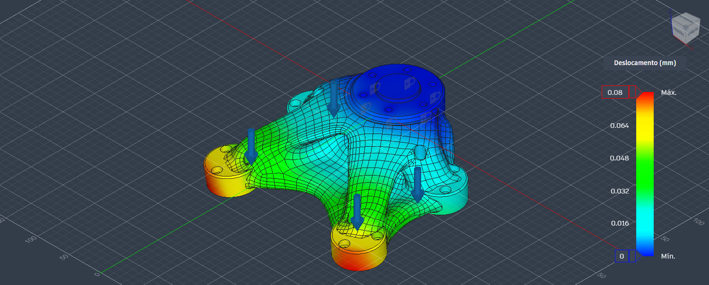
Esfera de 263 g a 1 m/s (0,132 J) · modelo de molas 1D, sem amortecimento
Modelo reduzido (R03), não é FEA: a seção da garra e a área de contato são hipóteses. O impulso total é igual nos dois casos (0,526 N·s), porque o PAD espalha a força no tempo.
| Impactor | esfera de aço R20 · 263 g |
| Velocidade | 1 m/s · 0,132 J |
| PAD | TPU 95A · 40% · 6,3 mm |
| Garra (seção) | PA-CF Hexa3D 15% |
HyperFrames sobre os dados do modelo 1D R03 (molas em série, sem amortecimento). Não é FEA nem ensaio; garra do modelo: Hexa3D 15% (atual: TPMS-D zonal R06).
Quanto menor a área que recebe o golpe, mais macio o PAD fica e maior a redução do pico. A área real ainda não foi medida.
| Preenchimento | Sem PAD | Com PAD | Redução |
|---|---|---|---|
| 15% | 450,9 N | 168,5 N | 62,6% |
| 30% | 460,0 N | 169,0 N | 63,3% |
Dobrar o preenchimento da garra muda a redução em menos de 1 ponto percentual.
% de redução com PAD · área assumida em mm² (100 mm² é o caso base)
As cores são preenchimento interno do fatiamento. Cada zona é recortada do núcleo da peça, 2 mm abaixo da superfície (5 perímetros). O exterior não muda.
Volume de zona fora da peça: 0 cm³. Antes (R04) o modificador amarelo tinha 1.650 cm³, maior que a própria peça (1.391 cm³), e atravessava o contorno.
Massa da peça fatiada no Orca (K1 Max, 1:1, PA6-CF), sem suportes. Fatiamento local, nada enviado à impressora.
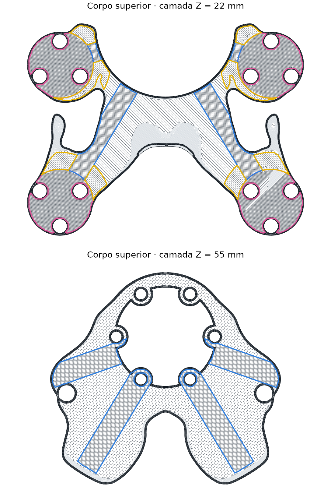
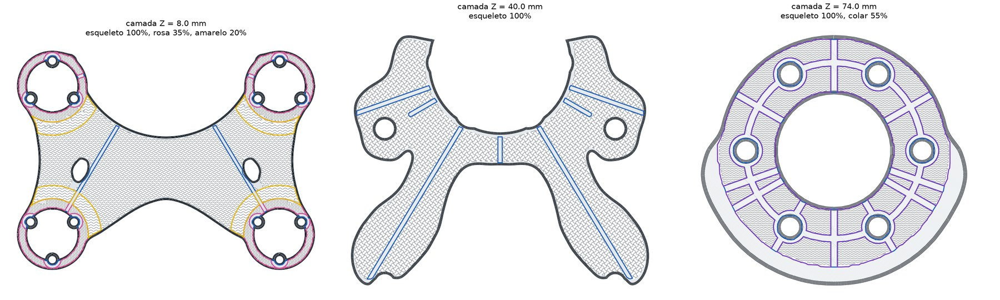
Almas de 3 mm a 100%, tubos de 7,5 mm nos furos, colar 55%, ressaltos 35%, assento 20%. Tudo fica 2,25 mm para dentro (5 perímetros): o exterior não muda. Massas do fatiamento, sem suportes.
Peça translúcida e as zonas de preenchimento do Orca. Use o corte para descer pelas camadas.
Superior R07 com esqueleto: almas + tubos 100% (99 cm³), colar 55% (120 cm³), ressaltos 35% (145 cm³), assento 20% (27 cm³)
superior + 2 inferiores · % de variação · faixa verde = meta de 5 a 10% mais leve
| Variante | Sup. g | Inf. g | Garra g | vs Tritan | Aguenta (asa) | Tempo | Custo |
|---|
Orca CLI K1 Max 1:1, PA6-CF 1,10 g/cm³, 5 paredes. Tritan = Hexa3D 30% × 1,18/1,10. Custo = R$ 258/kg × filamento com suportes. Inferior direita = espelho da esquerda. Aguenta = carga máxima numa asa da garra montada (FE, PA6-CF); ≈ = sem FE próprio, recebe o giroide de mesma densidade.
garra montada (superior + inferior) · ● PA6-CF, Z 48 MPa · ○ PAHT CF15, Z 18,2 MPa
| Variante | Garra | PA6-CF | PAHT CF15 | Tranco 24 kg FS PA6 / PAHT | ||
|---|---|---|---|---|---|---|
| aguenta | FS 24 | aguenta | FS 24 | |||
FE voxels 3 mm Garra montada (superior + inferior), engaste na flange, 2 caixas numa asa; ponto crítico na raiz da flange. Pico × 2,2 (calibrado no Fusion R06). Tranco = carga em 10 ms, peça superior. ⚠ FS < 1 = rompe entre camadas antes dos 24 kg. A Tritan instalada não tem FE com preenchimento; o R04 de bancada é a peça maciça.
As duas versões R07 seguram os 24 kg numa asa com folga, com ou sem esqueleto. O pico fica na raiz da flange do superior; a inferior trabalha bem abaixo.
FE voxels 3 mm Garra montada (superior + inferior direita), junta tratada como colada, giroide homogeneizado, pico × 2,2 (calibrado no Fusion R06). Linear-elástico: o campo escala com o peso. Estimativa, não é ensaio.
Superior + inferior unidas, engaste nos furos da flange e as duas caixas numa asa só (erro da seladora), com a aceleração do robô (g + 5 m/s²).
kg até romper entre camadas · linhas em 24 e 30 kg · FE por voxels, pico × 2,2
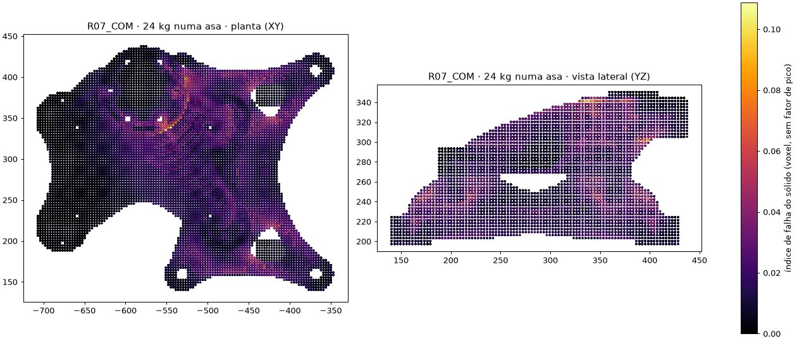
Cor = índice de falha local (0 = sem carga). A carga sai da asa carregada (direita), passa pelo colar e chega aos furos da flange. Com o colar e os tubos do R07, o caminho fica mais largo e o pico na raiz da flange cai. FE voxels 3 mm Cada mapa tem a própria escala de cor.
| Carga | 24 kg numa asa · g + 5 m/s² |
| Subida | 10 ms (tranco seco) |
| Amortecimento | 3% (Rayleigh) |
| Solver | Newmark, passo de 0,5 ms |
FE transiente 3D Peça superior, voxels de 3 mm, giroide homogeneizado (Gibson-Ashby). Estimativa, não é ensaio.
O giroide divide a carga com a casca e as almas e fica longe do limite. Quem decide a ruptura é a camada sólida na raiz da flange.
FE transiente 3D Peça superior, Newmark + Rayleigh 3%, voxels de 3 mm, giroide homogeneizado, massa de 24 kg nos ressaltos. Linear-elástico: mostra energia guardada, não dano. Estimativa, não é ensaio.
MPa ao longo de 80 ms · passe o mouse para ver quanto o giroide trabalha
| Variante | Garra | vs Tritan | Máx. numa asa PA6-CF / PAHT (kg) | FS 30 kg PAHT | Flecha 24 kg | Tranco: pico · FS PAHT |
|---|
+65 g e margem máxima: +7,5% de carga, +6,7% de rigidez e +6% de margem no tranco. Indicado para filamento de menor adesão entre camadas, trancos e fadiga.
A mais leve (−9,1% vs Tritan) e ainda com FS 3,1 a 30 kg em PA6-CF. Indicado se o peso for o critério principal.
Não recomendado: ou é mais pesado que o Tritan, ou é 25–40% mais fraco que o R07. TPMS-D 40% e Hexa3D usam a resistência do giroide de mesma %.
| Vida estimada (garra montada) | PAHT · só 12 kg | PAHT · 1% com 24 kg | PA6-CF · 1% com 24 kg |
|---|
Curva S-N conservadora (30% da resistência em 10⁷ ciclos), regra de Miner, 480 ciclos/h. Estimativa, não é ensaio. O erro da seladora não pode ser rotina: com PAHT, mesmo o R07 tem poucas centenas de horas se 1% dos ciclos for com 24 kg numa asa.
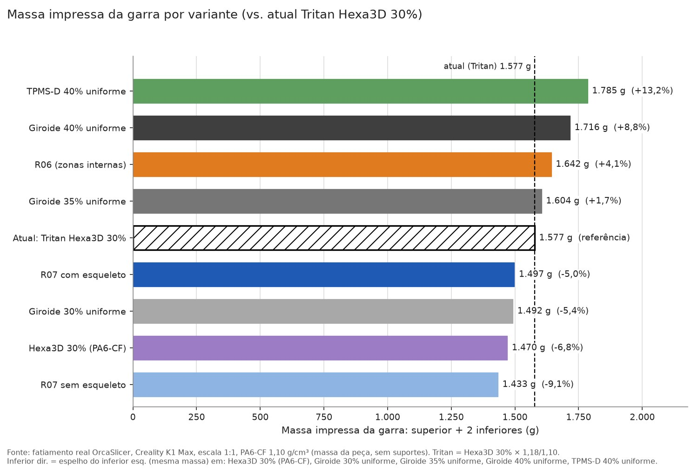
Massa da garra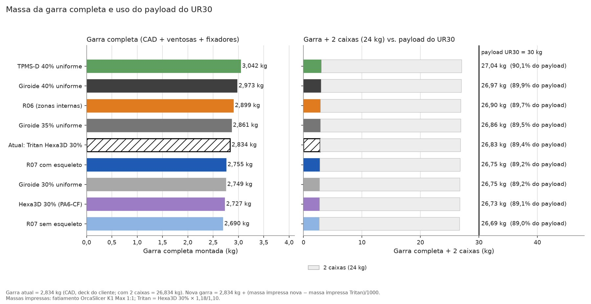
Payload do UR30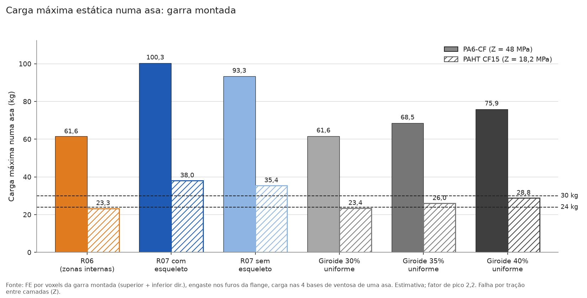
Carga máxima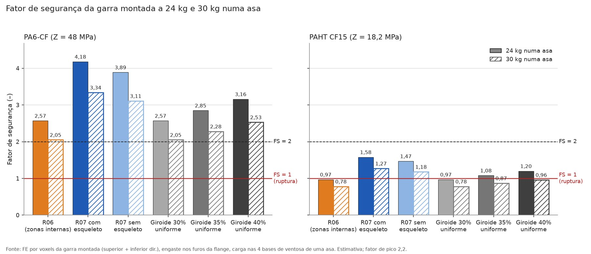
Fatores de segurança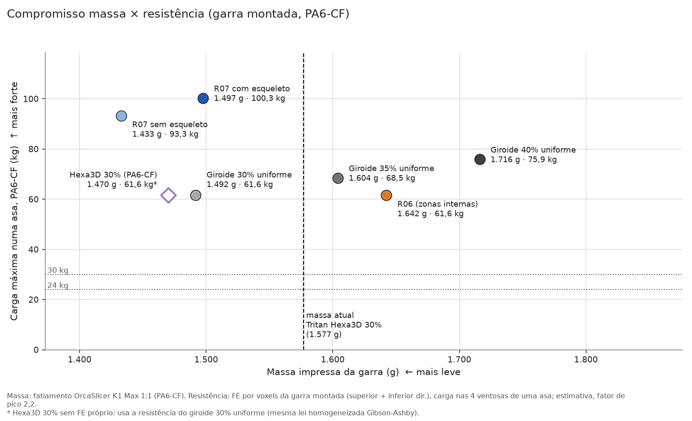
Massa × resistência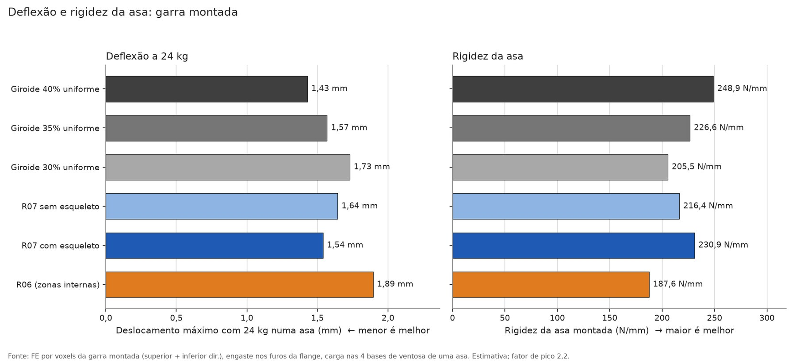
Rigidez e flecha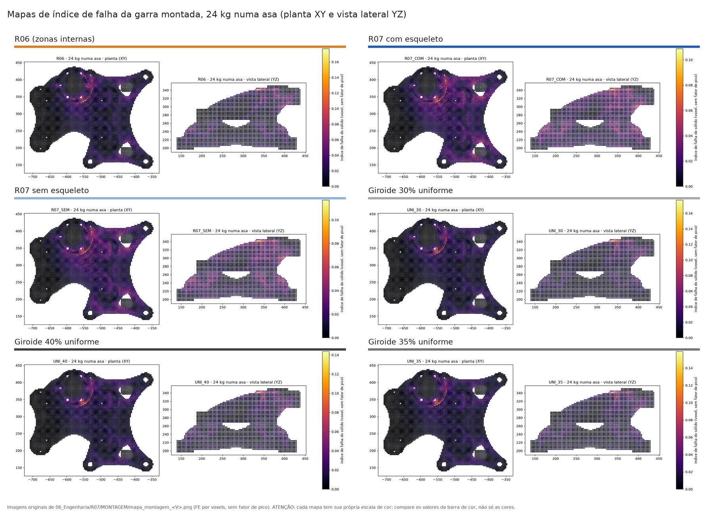
Mapas da montagem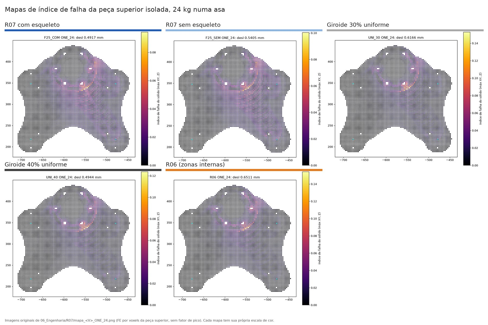
Mapas da superior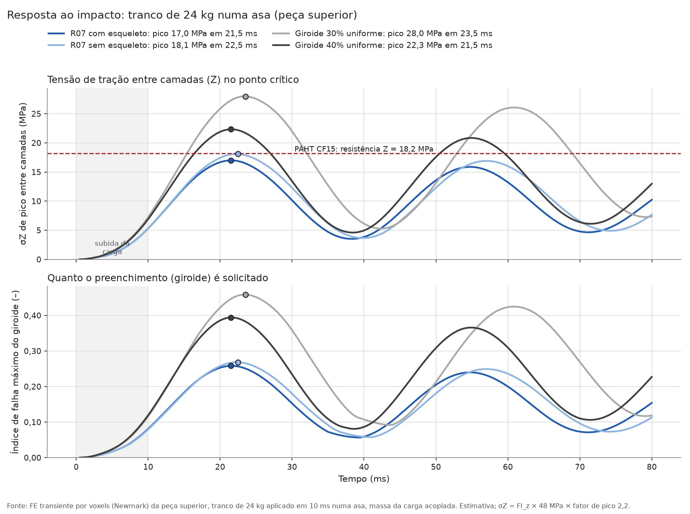
Curvas do impacto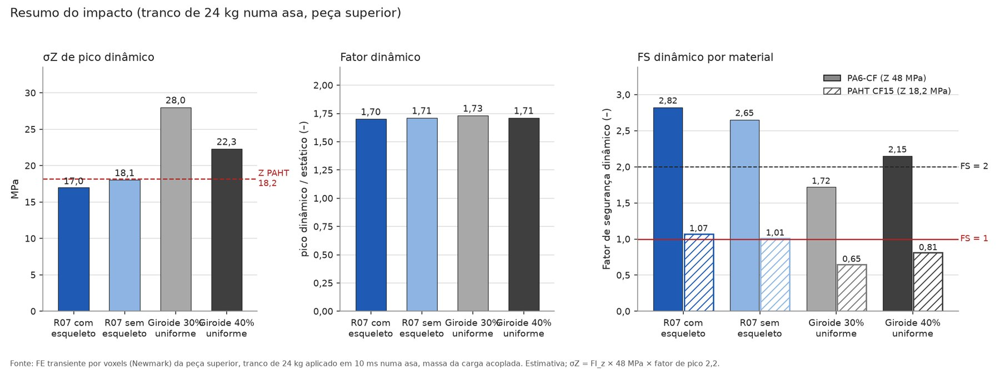
Resumo do impacto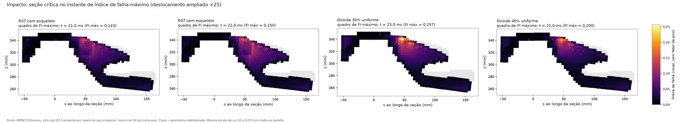
Seção no pico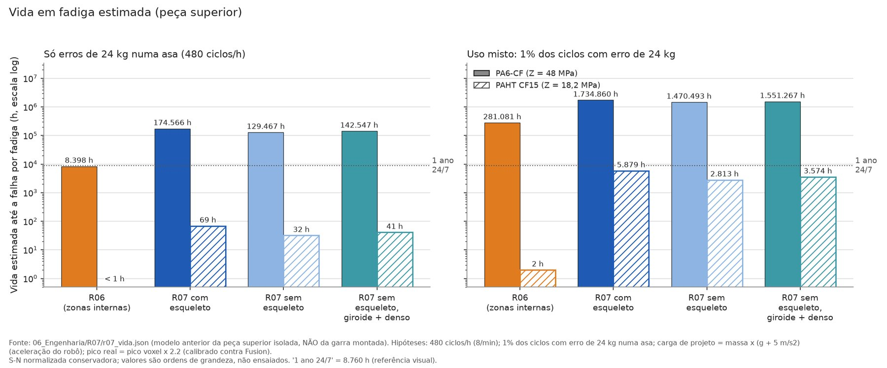
FadigaClique para ampliar. Todas geradas por r07_galeria.py a partir dos resultados em dados/.
| Modelo | superior R07 · 2 corpos |
| Casca (5 paredes) | 282 cm³ · PA6-CF sólido |
| Núcleo (giroide + zonas) | 1.110 cm³ · E = 790 MPa |
| Restrição | furos da flange (95 faces) |
| Carga | −355,36 N em Z na asa (24 kg × (g + 5)) |
| Malha do núcleo | 67.739 tetraedros · 105.928 nós |
O primeiro solve na nuvem falhou na malha da casca: a casca vem de uma operação booleana e tem triângulos muito finos (razão de aspecto de até 3.500). O núcleo gerou malha sem erro. Próximo passo: refazer a malha da casca e resolver de novo para calibrar o fator de pico (hoje 2,2, medido no R06).
Impacto no orçamento de produzir a garra e os PADs nas condições atuais. Preencher com o orçamento da equipe.
Como a garra R07 leva cerca de 79 h para imprimir, ter uma garra reserva pronta e PADs em estoque (troca a cada 2 meses). Quebra simultânea de garra e robô: definir com a equipe.
Todos os números deste site saem de arquivos de simulação e fatiamento. Os dados, scripts e o relatório estão abertos no GitHub.